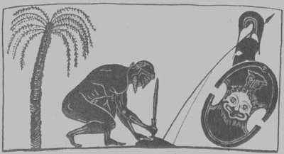

Troya savaşları sırasında Büyük Ayas (Aias); yarı-tanrı komutan Ahilleus'tan sonra en kahraman ve en güçlü savaşçı olarak tanıttı kendini. Hatta "Yunanlıların Kalesi" demeye bile başladılar ona! Zaten ondaki insanüstü gücü, Baştanrı Zeus bağışlamıştı ona!.. Yaygın söylenceye göre de bir zamanlar Ayas'ın babası Telamon, ünlü Herakles'e çok iyilikler etmişti. Bunun karşılığında da Herakles, babası Zeus'un bu aileye çok güçlü bir çocuk bağışlamasını dileyince Zeus da bu dileği kabul ettiğini belirten bir kartal uçurmuştu hemen havada! Bu yüzden Herakles de, Yunanca kartal demek olan "ayetos"tan türeme Ayas diye bir ad verilmesini önermişti doğacak çocuğa. İşte Troya savaşına on iki gemiyle katılan bu ünlü kartal kral Ayas, Yunanlı ordular nerede bir sıkıntıya düşerse hemen oraya yetişiyor ve bütün gücüyle vuruşuyordu!..
Yunanlı komutanların da gözleriyle gördüğü gibi, Troya yakınlarındaki bir kentten yağmalanan ganimetlerin paylaşımı sırasında Ahilleus'un payına düşen güzel Briseis'i Başkral Agamemnon, bir süre sonra zorla götürüp kendi barakasına kapattı! Buna haliyle kudurmuşçasına öfkelenen Ahilleus savaştan çekildi. Bu yüzden de anası tanrıça Tetis, Olimpos'a çıkıp Yunanlıların Troyalılar önünde sürekli yenilgiye uğramasını diledi Zeus'tan. Zeus da bir zamanlar deli divane sevdiği ve ilk gözağrısı olan ayağı gümüş halhallı tanrıça Tetis'in dileğini yerine getirmeye başladı... Artık sürekli yenilgiye uğrayan Başkral Agamemnon da, sözde yaptığına pişman olup sırf savaşa katılsın diye Ahilleus'a elçi üzerine elçi göndermeye başladı. Ama Ahilleus savaşa katılmayıp kendi yerine can dostu Patroklos'u gönderdi savaş alanına. Patroklos da Hektor'un kılıcıyla can verince, bu kez Büyük Ayas çıktı Troyalı Hektor'un karşısına... Gerçekten de yüreklilik yönünden birbirine denk olarak algılanan bu iki hasım kahraman, gene hasım orduların gözleri önünde teke tek vuruşmaya başladılar... Daha dövüşün başında Hektor'un fırlattığı ilk ok; Ayas'ın yedi kat deriden yapılmış ünlü kalkanının altı katını delip yedinci katında bükülüverdi! Bunun üzerine yerden kaptıkları kaya parçalarını birbirlerinin üstüne fırlata fırlata karşılıklı vuruştular akşama dek! Yenişemeyince de araya giren yaşlıların önerisiyle vuruşmaya son verdiler. İki hasım kahraman el sıkışıp birbirlerine armağanlar sundular. Hektor herkesin hayran olduğu en etkin kılıcını az önce kıyasıya vuruştuğu Ayas'ın eline tutuştururken; "İlerideki kuşaklar bizim nasıl vuruştuğumuzdan söz ederken sonunda dost olduğumuzu da unutmasınlar!" dedi ve gülümseyerekten askerlerinin arasına karıştı. Ayas da arkasından yetişip anasının armağanı ve yanından hiç ayırmadığı oyalı mendilini tutuşturdu az önce öldüresiye vuruştuğu Hektor'un eline!
Daha sonraları yarı-ölümsüz Ahilleus da savaşa katılmak zorunda kaldı. Ne var ki anası tanrıça Tetis; bu ilençli Troya savaşında oğlu Ahilleus'u yitireceğini çok iyi biliyordu. Bu yüzden "oğlum hemen vurulup ölmesin" diye ta Olimpos'a çıkıp işçilerin tanrısı demirci Hefaystos'tan bir kılıçla bir kalkan dövmesini istedi. İnsanlar arasındaki kavga-dövüşü sevmeyen iyi yürekli demirci Hefaystos da, sırf tanrıçanın hatırı için işliğinde dövdüğü kılıcın ve kalkanın üstüne, barışı ve onun dünyamıza getireceği huzuru simgeleyen olağanüstü sahneler işledi...

Büyük Ayas kendisine Hektor'un armağan ettiği kılıcı üstünde canına kıyacak
Bu tanrısal silahlarla savaşa katılan Ahilleus, gün gelip Paris'in fırlattığı okun gelip onun tek duyarlı yeri olan topuğunu delmesi sonucu yıkılıp düştü... Ahilleus'un cenaze töreninden sonra onun silahlarının kime verileceği konusu bir sorun oldu. Bunun üzerine Ahilleus'un anası tanrıça Tetis, onların en kahraman Yunanistanlı birine verilmesini istedi. Bu kahraman da haliyle Büyük Ayas'tan başkası olamazdı!. Ne var ki araya Başkral Agamemnon girdi. Odisseus'u çok seven tanrıça Atena girdi... Ve bu benzersiz silahları tutup Odisseus'a verdiler!..
İşte ondan sonra olanlar oldu... Büyük Ayas; kahramanlık onuruna hakaret edildiğini düşünüp büyük bir bunalıma girdi. Ve bir gece yatağından fırladığı gibi önüne çıkanı kılıçtan geçirmeye başladı! Daha sonra aklı başına gelince, bir koyun sürüsünü kesip biçtiğinin ayırdına vardı! Bu da onu büsbütün üzdü; utandırdı...
Birden savaş sırasında kıyasıya vuruştuğu can düşmanı Troyalı Hektor geldi gözlerinin önüne... O sözde hasım yiğit; savaşı bırakıp karşılıklı dost olmanın onuruna, en değerli kılıcını armağan etmişti ona!.. Ama şu anda da, Ahilleus'a bile hayır getirmeyen tanrı yapısı silahların neden ille de kendisine verilmesini istiyordu? Gerçekten de bu anlamsız tutkusundan utandı... Öldürüp yerlere serdiği masum koyunlardan utandı! Kıydığı nice masum yiğitlerin ölürken attıkları çığlıklar yankılandı kulaklarında... Kendisi de utancından çığlıklar atmaya başladı...
Ve Büyük Ayas, Hektor'un armağan ettiği kılıcı tersinden toprağa sapladı hemen ve göğsünü delip geçecek şekilde, bütün hışmıyla kendini bu kılıcın üstüne attı...